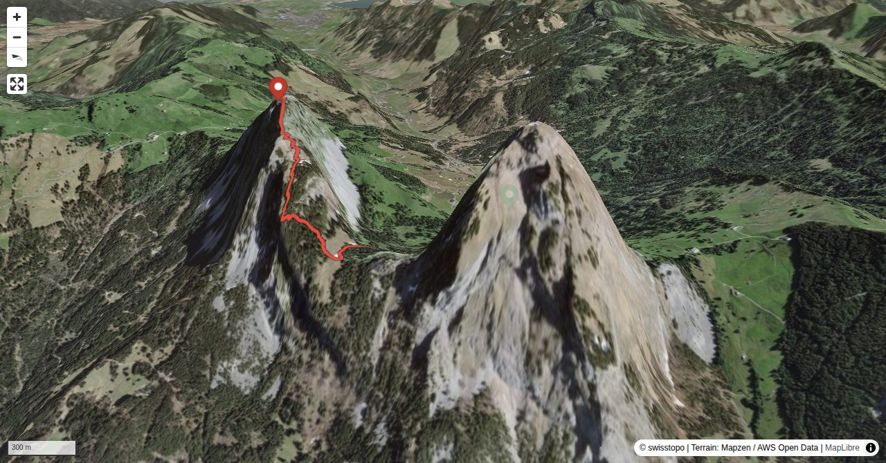

Klein Mythen is a small, but complex mountain. Rock walls, ribs and ridges make it look serious. The two main summits (Klein Mythen proper and Haggenspitz, slightly north of it) are interlinked by a whole net of itineraries and variants. From afar they all look considerably more difficult than they actually are. However, surefootedness, mobility and a feel for the itinerary are required. A very popular tour is the traverse of Haggenspitz and Klein Mythen: from Haggenegg to Grigelli (see Haggenspitz). From Grigelli follow the variant up to Klein Mythen described here and descend on the normal route also described here. Those who continue to climb Gross Mythen via Chrüzplangg (see Gross Mythen), can boast to have made the so-called Mythen trilogy.
Starting at Holzegg (aerial cableway from Brunni) cuts the hiking time by 30 min.
Quick Facts
| Summit elevation | 1810 m |
|---|---|
| Difficulty | SAC T5- Check the route notes below for terrain and commitment level. Guide |
| Trailhead | Brunni SZ, Talstation LBH |
| Distance | 3.3 km (out-and-back) |
| Total ascent | ~711 m |
| Elevation range | 1098-1810 m |
| Route sources | SAC Route Portal |
Photos


Route Map & Elevation
i
i
sac_scale (precise T1–T6) with
swissTLM3D Wanderwegart
fallback where OSM is silent (coarser T2/T3 and T4+ buckets).
Coverage: OSM 81.4% · swisstopo 17.0% · unknown 0.0%.Elevations computed from the inlined GPX track (SwissTopo height API).
Loading forecast…
3D Terrain View

Route Details
From the south (Zwischenmythen)
- Starting at Holzegg (aerial cableway from Brunni) cuts the hiking time by 30 min.
Terrain & safety
Some scrambling, fairly slippery scree and relatively steep meadows with faint paths: do not undertake when wet.
Source: SAC Route Portal
Getting There & Back
Start: Brunni SZ, Talstation LBH (1098 m)
Directions from to Brunni SZ, Talstation LBH
Route returns to Brunni SZ, Talstation LBH.
Field Reference
| Trailhead | Brunni SZ, Talstation LBH | 47.04200, 8.70330 |
|---|---|---|
| Summit | Klein Mythen (1810 m) | 47.04072, 8.68478 |
Coordinates are WGS84 decimal degrees (lat, lon). Emergency: 112 (general) or 1414 (Rega air rescue). Page URL: